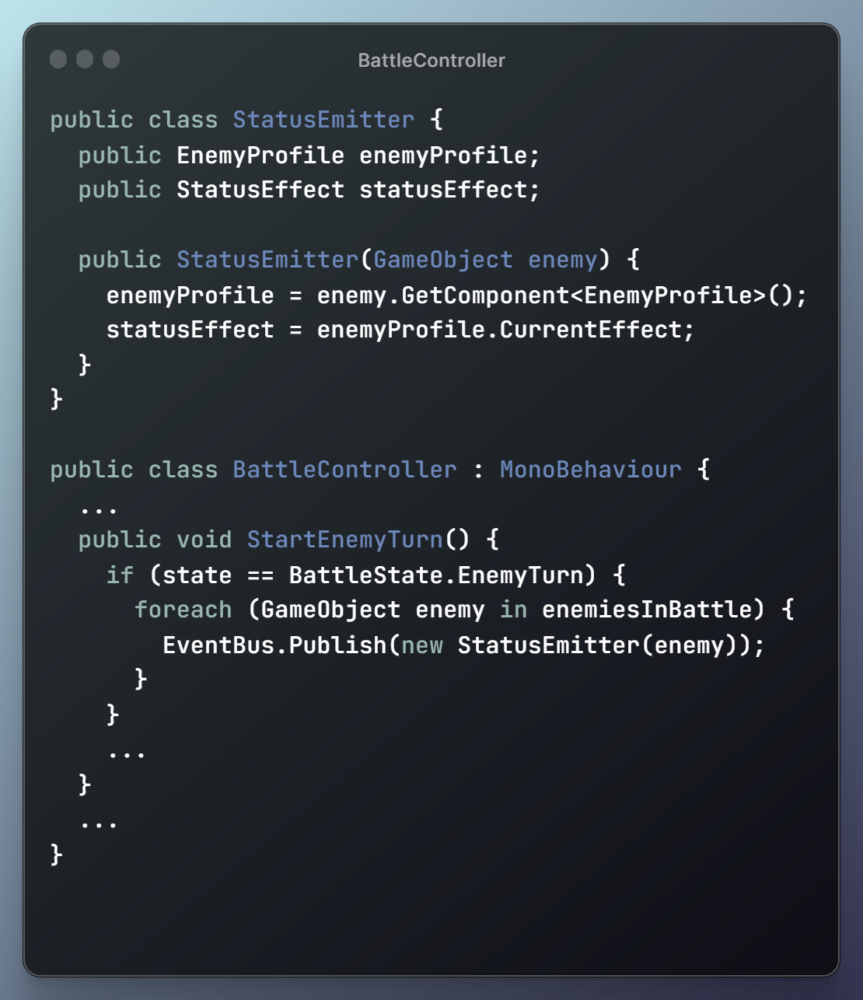

.png)
.png)
[Planning: 2 hours]
Jose-Andres Franco, QA Programmer
The first sprint was the start of our major duties. Programming for the encounter squad had to figure out how to create and integrate Special Complete Conditions, Status Effects, and new moves. My task for the sprint was the creation and integration of Special Complete Conditions.
Being tasked with creating Special Complete Conditions, design told me we needed something that can A) take on a variety of conditions to be met in order to trigger;
and B) once triggered, emit something for dialogue to handle a special completed encounter. Fresh off of the onboarding assignment where I implemented an achievement,
I realized I could borrow that same concept when creating the Special Complete Conditions: A base SpecialCompleteClass, with each child class fulfilling the
Special Complete archetype as they're provided by design.
[Planning: 2 hours]
Adding in the base class was simple at first, as I only needed a SpecialComplete class for EventBus emitting, and an Awake function to add any relevant subscriptions
or other preperatory variables. I also added an event publisher in battle which sends out the current enemy status for the Special Complete. This will likely be
useful for when we apply other effects or check on the duration of status effects on enemies.

.png)
[Implementation: 4 hours]
While last week had the implementation, it still needed to be integrated and tested. In order for Total Status Effect Complete to be tested, I needed both the Calm Skill
as well as the Calm Status to test, which was not completely implemented at time of implementation. So that was my duty for the second week. Meeting with fellow leads also
helped with me planning on how to handle it. Simply use the subscription to check teh enemy and status effect; if they match, increment and check if the complete fires. Simple.
[Planning: 2 hours]
Except when testing, the special complete wouldn't increment the status. At first I was confused and assumed I needed to create a new Unity Event. However, double
checking with breakpoints in the debugger, I noticed that the issue was with the Awake function not being called. Then I realized I created an Awake function that won't ever be
called. I swapped over to an Initialize function just like the Achievement class. Fixed the problem and learned how to handle objects like these.
.png)
.png)
.png)
[Testing: 3.5 hours]
Once I figured out the issue with SpecialCompleteCondition subscriptions, testing that the special complete works was simple, as well as publishing an Event for
SpecialComplete so that dialogue can do their thing when an encounter ends.
[Integration: 0.5 hours]
[Total: 12 hours]